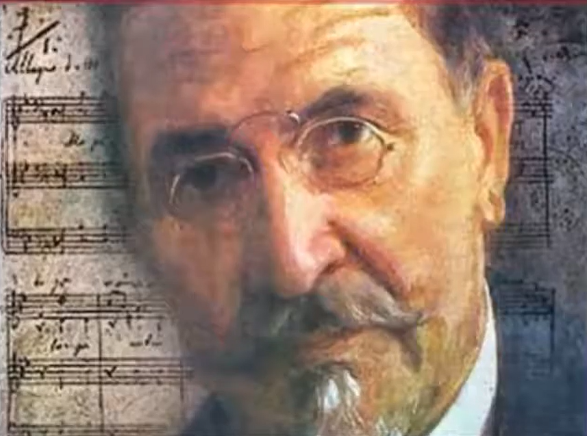
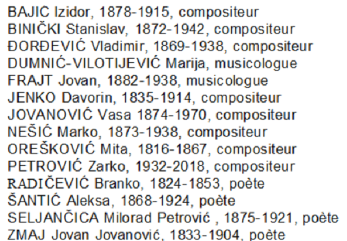

Stevan St. Mokranjac: Petnaest Rukoveti
Stevan St. Mokranjac: Les quinze Guirlandes

Stevan Stojanovic Mokranjac
|
Stevan Mokranjac je jedan od najznačajnijih srpskih kompozitora
do danas. Rođen je u Negotinu 1856. godine, umro u Skoplju 1914. Njegove
svetovne i duhovne horske kompozicije utkane su u kulturno i muzičko
nasleđe Jugoslovenske zemlje i postale su deo istorije ali i svakodnevne
muzičke prakse, inspirativan za mlade stvaraoce i izvodače. Stevan Stojanovic Mokranjac je bio horovodja i pedagog. Uzdizao i organizovao muzički život u Beogradu posle uspešnih studija muzike u Rimu i Lajpcigu; Osnovao "Muzičku školu Mokranjac" 1899. koja i danas postoji i bio njen prvi direktor i profesor teorijskih predmeta. Isključivo je vokalni kompozitor i stvarao je na podrućju svetovne i crkvene horske muzike. Najpoznatija dela, 15 "Rukoveti" koje su nastale u rasponu od 26 godina od 1883 - 1909.) Rukoveti predstavljaju vrstu horskih svita inspirisanih folklorom različitih krajeva južnoslovenskog podneblja. Na melodijama i ritmovima iz Srbije i Makedonije nastale su najlepše Rukoveti od kojih Deseta, sa temom" Biljana platno beleše" predstavlja sam vrhunac Mokranjčevog stvaralastva. Rukoveti sa Kosova, iz Crne Gore i iz Bosne, zajedno sa Primorskim napjevima i originalnom horskom kompozicijom (minijaturom) "Kozar" čine osnovu njegovog svetovnog horskog stvaralastva. Od duhovnih dela pisanih u pravoslavnoj tradiciji i danas su deo koncertnog repertoara "Opelo" u fis molu, "Liturgija", i dr. Postavivši temelje etnomuzikologije beleženjem preko 300 narodnih melodija iz raznih krajeva zemlje, Mokranjac je otvorio puteve i drugim raznovrsnim delatnostima: bio je istaknuti dirigent Beogradskog pevačkog društva sa kojim je putovao po zemlji i inostranstvu (Rusija, Turska, Bugarska), osnovao je "Gudački kvartet" u kome je i sam svirao (1889) i zajedno sa Cvetkom Manojlovićem i Stanislavom Binićkim postavio je temelje srpskoj muzičkoj pedagogiji, osnivajući Srpsku muzicku skolu (1899.) Rukoveti Naziv "Rukovet" (fr. "javelle", 3 ili 4 šake pšenice) potiče iz narodnog jezika i trebalo bi da simbolizuje muzičku kompoziciju različitih pesama različitih naroda. Rukoveti se u srpskoj upotrebi primenjuju kao muzički termin ili sinonim za rapsodije na osnovu narodnih pesama. Forma Rukoveti zasnovana je na delu "Kolo" srpskog kompozitora Josifa Marinkovića. kompozicionih principa. Nemački muzikolozi su nametnuli netačan prevod: „girlande” (venac). Za sastavljanje Mokranjčevih Rukoveti razvijeni su sledeći principi: Prerađene narodne pesme prvo su morale da zadovolje visoke muzičke kriterijume. Nastala je zbirka od ukupno 500 pesama. Narodne pesme su klasifikovane prema temama ili prema mestu nastanka. Mokranjac je pridavao veliki značaj stvaranju koherentne celine od raznih narodnih pesama. Bio je inspirisan drugim cikličnim oblicima muzike kao npr svita ili sonata. Prepletom brzih i sporih narodnih pesama i tužnih i veselih narodnih pesama, Mokranjac je uspeo da stvori raznovrsnu i dinamičnu kompoziciju. Pozajmivši od Marinkovića, Mokranjac u prve dve Rukoveti koristi raznovrsnost narodnih pesama, za razliku od kasnijih, koje su uglavnom ograničene na nekoliko tema. Narodne pesme nisu smele da izgube izvornu melodiju. Mokranjac je, pre, insistirao na detaljnoj obradi polifonijom ili kontrapunktom. U slučaju Rukoveti treba istaći i psihološku vezu između reči i muzike. Mokranjac tako stvara ekspresivan dijalog između muških i ženskih glasova, kao što je to uobičajeno u operi. Peti i jedanaesti Rukovet smatraju se uspešnim primerima. Starogradska muzika i izvorna muzika Ovde sam pokušao da pesme koje je Mokranjac preradio približim obliku koji poprimaju u kategoriji koja je donedavno bila veoma popularna, u "starogradskoj muzici". Samo manjina od pesama nekadašnje Jugoslavije je zaista stara. Stare i anonimne seljačke pesme, kao i „savremene” pesme, ušle su na repertoar izvođača kafanskih koncerata (ili sličnih ustanova) u obliku koji čuva orijentalne načine (orijentalni raspon, umetnost vokalnog ornamenta, pojedini instrumenti kao što je lauta nazvana „tambur(ic)a”), ali se povinuje zapadnjačkoj estetici (orkestar instrumenata kao što su harmonika, saksofon, obeležen kontrabas, smenjivanje pevanih stihova i instrumentalnih interludija...). Ova mešavina daje posebnu draž ovoj vrsti muzike pod nazivom „starogradska muzika“ (termin koji je 1971. skovao kompozitor Žarko Petrović, 1932-2018, 1932-2018, da bi poslužio kao naslov jedne ploče). Dr Marija Dumnić Vilotijević u „Zvucima nostalgije” (2019) navodi 2 izvođača ove vrste muzike koji su u periodu od 1900. do 1941. godine stekli status zvezda, Mijata Mijatovića (1887-1937) i Sofku Nikolić (1907-1982). Ona naglašava ulogu Beograda i njegovog boemskog okruga Skadarlija, kao i talentovanog izvođača Zvonka Bogdana (rođen 1942. godine), u razvoju ovog muzičkog žanra. Danas se pokušava oživiti stara seljačka pesma, bez orkestarske pratnje. Ovo se zove „izvorna muzika“. Pronašao sam nekoliko primera na koje možete naići dok pregledate sajt. Ova razlika je samo delimično relevantna: skoro sve pesme ovog tipa navedene na sajtu „sr.vikisource/viki/Изворне песме“ nalaze se na repertoaru pevača starogradske muzike. Delim zabrinutost Marije Dumnić Vilotijević koja završava svoju knjigu izražavajući strah da će ova vrsta muzike biti rezervisana za koncertnu publiku ili zamrzavana u turističke svrhe. Ovaj tradicionalni muzički stil, čiji unutrašnji kvaliteti i vokalne i instrumentalne izvedbe postavljaju na nivo umetničke vrednosti jedva ispod klasične muzike, nestao bi pod pritiskom prljavih komercijalnih imperativa. Kad sam bio student, 1963. godine, prvi put sam čuo koncert "narodne muzike", kako su je tada zvali, u Niškoj tvrđavi. Susedna banja, Niška Banja, proslavljena je u čuvenoj pesmi sa ovog repertoara gde se ciganski jezik smenjuje sa srpskim. Vratio sam se u Niš 2018 g.: u tvrđavi se sada nalazi Muzej Džeza koji je ime Niša zamenio Nešvilom! |
Prva Rukovet - Première guirlande "Iz moje domovine - De mon pays natal" 1 Bojo mi Bojo; 2 Jarko sunce odskočilo; 3 Sto ti je Jano; 4 Karavlije lane moj; 5 Igrali se vrani konji; 6 Reće cica da me ženi; 7 Protužila Pembe Ajša; 8 Imala Majka jado; 9 Imala baba Druga Rukovet - Deuxième guirlande "Iz moje domovine - De mon pays natal" 1 Osu se nebo zvezdama; 2 Smilj Smiljana; 3 Jesam li ti Jelane; 4 Maro Resavkinjo; 5 U Budimu gradu Treca Rukovet - Troisième guirlande "Iz moje domovine - De mon pays natal" 1 Zaspala devojka; 2 Urani beale; 3 Lepo ti je javor; 4 Tekla voda; 5 Razbole se Grivna; 6 Aoj Neno; 7 Čimbirčice; 8 Ala imaš oči; 9 Ovako se kuća Četvrta Rukovet - Quatrième guirlande "Mirjana - Miryana" 1 Mirjano, oj Mirjano; 2 Mirjano, oj Mirjano; 3 Mirjano, mori Mirjano, 4 Od cvih žena garavih i plavih Peta Rukovet - Cinquième guirlande "Iz moje domovine - De mon pays natal" 1 Šta to mice; 2 A što ti se Jano; 3 Konja sedlas; 4 Povela je Jela; 5 Moj se dragi na put; 6 Lele Stano mori; 7 Oj za gorom; 8 Oj devojko; 9 Nema višnju koij da bere 10 Ajde more momičeto Šesta Rukovet - Sixième guirlande "Hajduk Veljko - Haïdouk Velko" 1 Knjigu piše; 2 Raslo mi je badem drvo; 3 Hajduk Veljko; 4 Kad Beograd; 5 Bolan mi leži Sedma Rukovet - Septième guirlande "Pesme iz Stare Srbije i Makedonije - Chants de Vieille-Serbie et Macédoine" 1 More izvor; 2 Ajde koj ti kupi kulančeto; 3 Što li mi je; 4 Poseja dedo; 5 Varaj, Danke! Osma Rukovet - Huitième guirlande "Pesme sa Kosova - Chants de Kosovo" 1 Džanum na sred sela; 2 Što Morava mutno teće; 3 Razgrana se grana jorgovana; 4 Skoč , kolo, da skočime Deveta Rukovet - Neuvième guirlande "Pesme iz Crne Gore - Chants de Monténégro" 1 Poljem se njiva; 2 Rosa plete puše kose; 3 Lov lovili građani; 4 U Ivana gospodara Deseta Rukovet - Dixième guirlande "Pesme iz Ohrida - Chants d'Ohrid" 1 Biljana platno beleše; 2 Do tri mi puški puknale; 3 Dinka dvori mete; 4 Pušći me, majko-le mila; 5 Niknalo cvekje Jedanaesta Rukovet - Onzième guirlande "Pesme iz Stare Srbije - Chants de Vieille-Serbie" 1 Pišaše mi Stano mori; 2 Crni goro; 3 Oj Leno, Lenko; 4 Kaluđere, crna dušo! Dvanaesta Rukovet - Douzième guirlande "Pesme sa Kosova - Chants de Kosovo" 1 Deka si bila danaske, Cveto?; 2 Aman, šetnala si more Jano; 3 Da l' nemam džanum?; 4 Cvekje cafnalo; 5 Sedi moma na pendžeru Trinaesta Rukovet - Treizième guirlande "Iz moje domovine - De mon pays natal" 1 Devojka junaku prsten povračala; 2 Oj ubava mala momo; 3 Slavuj pile more; 4 Krče, krče, nova kola; Četrnaesta Rukovet - Quatorzième guirlande "Pesme iz Bosne - Chants de Bosnie" 1 Kara majka Aliju; 2 Svaka tica u šumici; 3 Devojka viče iz tanka grla; 4 Što no mi se Travnik zamaglio?; 5 Uzrast'o je zelen bor; Petnaesta Rukovet - Quinzième guirlande "Pesme iz Makedonije - Chants de Macédoine" 1 Marije, bela Marije; 2 Ej obasjala mesecina; 3 Bog da go ubije!: 4 Prošete' devet, majko, godini; 5 Sejala Dinka bosiljak |
Stevan Mokranjac est l'un des compositeurs serbes les plus
importants à ce jour. Il est né à Negotin en 1856 et mort à Skopje en
1914. Ses compositions chorales profanes ou liturgiques ont jailli de
l'héritage culturel et musical yougoslave. Elles font partie désormais
des sources à la fois historiques et impérissables qui alimentent la
pratique quotidienne de jeunes créateurs et interprètes. Stevan Stojanovic Mokranjac était chef de chœur et pédagogue. Après de brillantes études musicales à Rome et à Leipzig, c'est à Belgrade qu'il fonda en 1899 l'Académie de musique Mokranjac, qui existe toujours, et dont il fut le premier directeur et professeur de théorie musicale. Il composa exclusivement dans le domaine de la musique vocale et de la musique chorale profane et liturgique Ses œuvres les plus connues sont les 15 "Rukoveti" qui furent composées en l'espace de 26 ans, de 1883 à 1909. Ces oeuvres sont une sorte de suites chorales inspirées du répertoire de différentes parties du monde slave du sud. C'est sur des mélodies et des rythmes de Serbie et de Macédoine, que les plus belles Rukoveti furent créées. Avec la Dixième Rukovet sur le thème du chant "Biljana platno beleše", Mokranjac parvint au sommet de sa créativité. Les répertoires du Kosovo, du Monténégro et de Bosnie, ainsi que les chants du Littoral adriatique et l'improvisation chorale dite "Kozar" constituent la base de ces "miniatures" en matière de chant choral profane. Parmi ses œuvres liturgiques écrites dans la tradition orthodoxe, citons l'"Opelo" (Office des morts) en fa dièse mineur, et la "Liturgija" qui sont encore souvent jouées en concert. Après avoir jeté les bases de l'ethnomusicologie (en collectant plus de 300 mélodies folkloriques de diverses régions du pays), Mokranjac a innové dans bien d'autres domaines : Il fut le chef éminent de la Société Chorale de Belgrade avec qui il parcourut la Yougoslavie et l'Europe (Russie, Turquie, Bulgarie). il fonda un Quatuor à cordes dont il faisait partie (1889) et, avec Cvetko Manojlović et Stanislav Binićki, il jeta les bases de l'enseignement musical en Serbie en fondant l'Académie de musique serbe (1899). Le mot "Rukovet" ("brassée", "javelle"= 3 ou 4 poignées de blé, 7 javelles donnant une gerbe) vise à rendre compte de la combinaison musicale de chants propres à différents peuples. Les Rukoveti sont passées dans le vocabulaire musical serbe comme synonyme de rhapsodies composées à partir de chants anciens. Les Rukoveti sont dans le droit fil du recueil "Kolo" du compositeur serbe Josif Marinković. Les musicologues allemands ont imposé une traduction inexacte de ce mot: "guirlande". Les principes suivants ont été appliqués par Mokranjac dans l'élaboration de ses Rukoveti: Les chants retenus devaient avant tout répondre à des critères qualitatifs musicaux élevés. 500 chants au total furent retenus et présentés regroupés, tantôt par thème, tantôt par origine géographique. Mokranjac s'efforça de créer un ensemble cohérent à partir de chants d'une grande diversité. Il s'inspira d'autres formes cycliques de musique telles que la "suite" ou la "sonate". En faisant interagir des mélodies populaires rapides avec des mélodies lentes et des chants tristes avec des chants joyeux, Mokranjac a su créer un ensemble à la fois varié et dynamique. Sur le modèle de Marinković, Mokranjac utilise d'abord toute une palette de chants divers dans les deux premières Rukoveti. Dans les dernières au contraire, il se limite généralement à quelques thèmes. Les chants retravaillés ne devaient en aucun cas s'écarter de la mélodie originale. Au contraire, Mokranjac s'est astreint à un traitement scrupuleux de ces données par la polyphonie ou le contrepoint. Dans une Rukovet, il convenait en outre de souligner l'accord entre paroles et mélodie. Mokranjac crée ainsi un dialogue expressif entre voix masculines et féminines, comme cela est d'usage à l'opéra. Les cinquième et onzième Rukovet sont de ce point de vue, particulièrment réussies. Musique urbaine ancienne et musique des origines On s'est efforcé ici de rapprocher les chants harmonisés par Mokranjac de la forme qu'ils revêtent dans une catégorie encore très populaire, il y a peu: la "musique urbaine ancienne". Seule une minorité de chants de l'ex-Yougoslavie peut revendiquer une haute antiquité. Les chants paysans authentiquement anciens et anonymes, ainsi que les chants “modernes” sont entrés dans le répertoire d'artistes de cafés-concerts (ou établissements équivalents) sous une forme qui a su préserver les procédés orientaux (gamme orientale, art de l'ornement vocal, certains instruments tels que la mandoline appelé “tambura”), tout en se pliant à l'esthétique occidentale (orchestre, instruments tels que l'accordéon, le saxophone, ryhtme marqué par la contrebasse, alternance de strophes chantées et interludes instrumentaux...). Ce mélange confère à ce type de musique dite “staro-gradska muzika” ("musique urbaine ancienne", terme forgé en 1971 par le compositeur Žarko Petrović, 1932-2018, pour servir de titre à un de ses disques) un charme qui lui est propre. Dans son recueil "Sons de la nostalgie" (2019), Marija Dumnić Vilotijević cite 2 interprètes de ce type de musique qui entre 1900 et 1941 accédèrent au statut de vedette: Mijat Mijatović (1887-1937) et Sofka Nikolić (1907-1982). Elle insiste sur le rôle joué par Belgrade et son quartier bohème de Skadarlija, ainsi que sur celui d'un intreprête de talent, Zvonko Bogdan (né en 1942), dans l'épanouissement de ce genre musical. Quelques tentatives sont faites aujourd'hui pour ressusciter l'ancien chant paysan, sans accompagnement orchestral. C'est ce qu'on appelle “izvorna muzika” où “izvor” veut dire source. J'en ai trouvé quelques exemples que l'on rencontrera peut-être en circulant sur le site. Cette distinction n'est qu'en partie pertinente: la presque totalité des chants de ce type listés sur "sr.wikisource/wiki/Изворне песме" se retrouve dans le répertoire des chanteurs de musique urbaine ancienne. Je partage l'inquiétude de Marija Dumnić Vilotijević qui conclut son étude en exprimant sa crainte de voir ce type de musique réservé à un public de concerts ou fossilisé à des fins touristiques. Ce style musical traditionnel que ses qualités intrinsèques et les performances vocales et instrumentales qui l'accompagnent situent à un niveau de valeur artistique à peine en-dessous de la musique classique, disparaîtrait sous la pression de sordides impératifs commerciaux. Quand j'étais étudiant, j'avais entendu en 1963, pour la première foi, un concert de "musique populaire" (narodna muzika), comme on disait alors, dans la forteresse de Niš. La station thermale voisine, Niška Banja, était célébrée dans un chant fameux de ce répertoire où la langue tzigane alterne avec le serbe. Je suis retourné à Niš. en 2018: la forteresse abrite désormais un musée du jazz qui a remplacé le nom de Niš par Nashville! |
STAROGRADSKA MUZIKA MUSIQUE URBAINE ANCIENNE
|
|
|
|


Cliquer le lien ci-dessous - Kliknite na link ispod
|
GALERIE DE PORTRAITS
Auteurs, compositeurs et musicologues
cités dans l'ouvrage de Mme Dumnić-Vilotijević
|
Balayer la liste pour faire apparaître les portraits  Prevucite listu da biste otkrili portrete |